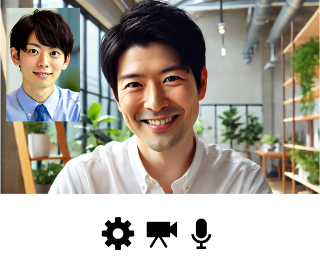
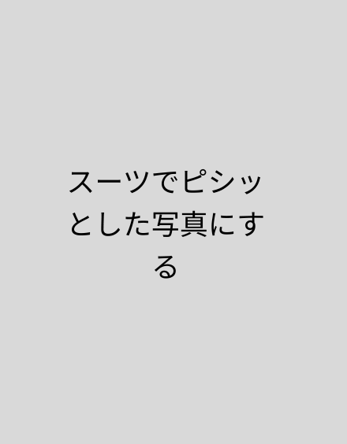

SERVICE
サービス
第三者による退職面談や相談の代行
「スピークマインド」
「スピークマインド」
第三者による退職者面談や相談の代行で組織改善
退職代行を使われたりして、退職理由がほとんど分からない企業のために第三者による退職者面談や相談を提供することで本音を話しやすい環境を作り退職理由や悩みを聞き出します。
本音を話してもらいレポート化することで、改善ができるようになったり、退職代行や退職を止めたりすることができます。
VIEW MORE
→
本音を話してもらいレポート化することで、改善ができるようになったり、退職代行や退職を止めたりすることができます。

MEMBER
メンバー

代表取締役社長
持田 貴洋
Mochida Takahiro
関西大学卒業後、 新卒で国家公務員として会計検査院に入庁。
主に調査業務に従事し、データ分析業務や企画業務を経験。
株式会社エイアイ・フィールド(現AMBL株式会社)にデータアナリストとして転職。 データアナリストとして購買データの分析や業務支援ツールの開発を経験し、 データアナリストの採用と教育担当のマネージャーを経験。採用面談を年に500回行ったり、 退職面談や報告レポートの作成したり、退職傾向の分析と改善策の提案などを経験。
2023年9月に独立し個人事業を開始。100回以上のインタビューを実施して事業を探索し、 2024年7月1日に株式会社クライミングウォントを設立。代表取締役社長に就任。
株式会社エイアイ・フィールド(現AMBL株式会社)にデータアナリストとして転職。 データアナリストとして購買データの分析や業務支援ツールの開発を経験し、 データアナリストの採用と教育担当のマネージャーを経験。採用面談を年に500回行ったり、 退職面談や報告レポートの作成したり、退職傾向の分析と改善策の提案などを経験。
2023年9月に独立し個人事業を開始。100回以上のインタビューを実施して事業を探索し、 2024年7月1日に株式会社クライミングウォントを設立。代表取締役社長に就任。
COMPANY
会社概要
会社名
クライミングウォント株式会社
クライミングウォント株式会社
所在地
〒150-0045
東京都渋谷区神泉町10番15号 アネックス神泉301
〒150-0045
東京都渋谷区神泉町10番15号 アネックス神泉301
設立
2024年7月1日
2024年7月1日
代表
代表取締役社長 持田 貴洋
代表取締役社長 持田 貴洋
資本金
400,000円
400,000円
事業内容
- 退職インタビューサービス
- 人事業務のDX支援事業
- DXによる業務改善の支援事業